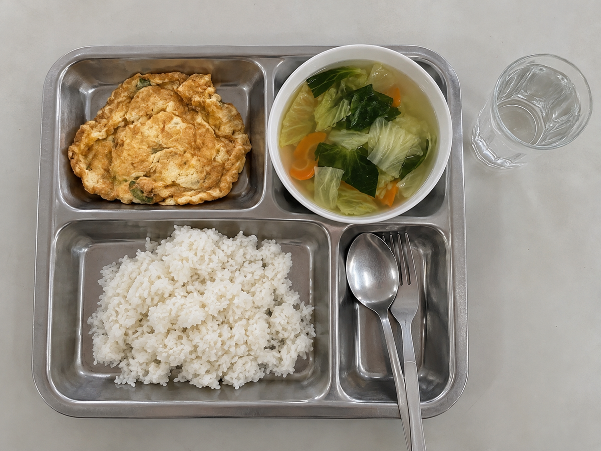

Markdown · เขียนให้คนอ่าน
เป็นไฟล์ข้อความที่ใช้ # ทำหัวข้อ - ทำรายการ และ backticks ครอบชื่อไฟล์หรือคำสั่ง เหมาะกับข้อสรุปที่ผู้เรียนและผู้สอนอ่านต่อเนื่องได้
# ข้อสรุป
- ราคาอยู่ในงบ
- ความอิ่มยังยืนยันไม่ได้Module 2
หิว → กิน → อิ่ม · คัดลอก Prompt ใช้กับชุดอาหาร แล้วดูว่าคำตอบและผลงานเปลี่ยนอย่างไร
module-02-work/input/original/ แล้วเริ่มด้านล่าง ทบทวน Module 1ใช้ module-02-food-evidence.zip ใน module-02-work/input/original/ ตรวจรายการและแตกไฟล์อย่างปลอดภัยโดยไม่เขียนทับต้นฉบับ ถ้าไม่พบ ZIP ให้ถามฉันก่อน
แสดงรายการไฟล์ที่อ่านได้และอ่านไม่ได้ แล้วหยุดรอ ยังไม่ตอบเรื่องอาหารสังเกตผล: AI พบไฟล์อะไรบ้าง? ถ้าอ่านไฟล์ไม่ได้ บอกตรง ๆ หรือข้ามไปโดยไม่บอก?
อ่านชุดอาหารที่เตรียมให้ แล้วสรุปว่าข้าวไข่เจียวมื้อนี้เหมาะกับคนงบ 80 บาท และทำให้อิ่มถึง 16:00 หรือไม่ ตอบสั้น ๆ เก็บคำตอบนี้ไว้เปรียบเทียบรอบต่อไปสังเกตผล: มีคำตอบไหนระบุที่มา? มีข้อไหนฟันธงทั้งที่ยังไม่มีข้อมูล? ยังไม่ต้องตัดสินว่า AI จะตอบถูกหรือผิด
ตอบคำถามเดิมอีกครั้ง ใช้เฉพาะไฟล์ในชุดอาหาร
แสดงตารางสั้น ๆ: ข้อสรุป | ไฟล์และตำแหน่งที่รองรับ | สิ่งที่ยังตอบไม่ได้
แยกข้อมูลในสูตร ตาราง และสิ่งที่เห็นในภาพ ตัวเลขใน 07-mock-nutrition.csv เป็นข้อมูลจำลอง ไม่ใช่ค่าจากอาหารจริง ห้ามเดาข้อมูลที่ขาด
เทียบกับคำตอบรอบแรกว่ามีข้อไหนที่ต้องแก้หรือยังเหมือนเดิมสังเกตผล: เทียบกับ Prompt 1: ที่มาชัดขึ้นหรือไม่? ข้อความเรื่องความอิ่มและตัวเลขโภชนาการเปลี่ยนอย่างไร? ถ้ายังเดา ให้ชี้ข้อนั้นแล้วสั่งแก้
จากข้อมูลที่ตรวจแล้ว สร้าง module-02-work/output/meal-card.md หนึ่งหน้า มีสูตรสำหรับ 2 ที่ ตารางโภชนาการจำลองพร้อมหน่วย และคำบรรยายภาพ ระบุแหล่งข้อมูลและสิ่งที่ยังไม่ทราบ
บอกชัดว่าตัวเลขโภชนาการแต่งขึ้นเพื่อการสอน ไม่ได้คำนวณจากสูตรหรือภาพ เปิด Markdown Preview ให้ฉันดู แล้วหยุดรอสังเกตผล: เปิดผลงานจริง: สูตรตรงกับ Word หรือไม่? ตัวเลขและหน่วยตรงกับ CSV หรือไม่? คำบรรยายภาพมีสิ่งที่มองไม่เห็นปนมาหรือไม่?
แก้บัตรอาหารเดิมให้เหลือ 5 บรรทัดสำหรับคนกำลังเลือกมื้อกลางวัน คงตัวเลข หน่วย และป้ายข้อมูลจำลองไว้ ไม่เพิ่มข้อเท็จจริงใหม่
เก็บฉบับเดิมไว้ แล้วเปิดฉบับย่อเทียบกันสังเกตผล: รูปแบบเปลี่ยนตามคำสั่งไหม? ข้อมูลสำคัญหายหรือถูกเปลี่ยนไหม? ลองเปลี่ยนคำสั่งหนึ่งจุด แล้วดูผลอีกครั้ง
LO
ดูตัวอย่างก่อน แล้วฝึกให้ AI สร้างผลงานง่ายที่เปิดอ่านและตรวจได้
เป็นไฟล์ข้อความที่ใช้ # ทำหัวข้อ - ทำรายการ และ backticks ครอบชื่อไฟล์หรือคำสั่ง เหมาะกับข้อสรุปที่ผู้เรียนและผู้สอนอ่านต่อเนื่องได้
# ข้อสรุป
- ราคาอยู่ในงบ
- ความอิ่มยังยืนยันไม่ได้เก็บข้อมูลเป็น "key": value ภายใน object และ array รูปแบบต้องตรงกับ schema จึงเหมาะกับการนับ claims ตรวจ L1–L4 และรับผลบน server
{
"decision": "insufficient_evidence",
"open_questions": 2
}สองไฟล์ทำงานคู่กัน: Markdown เก็บคำอธิบายฉบับเต็ม ส่วน JSON เก็บผลแบบมีโครงสร้างและ SHA-256 ของ Markdown เพื่อยืนยันว่าอ้างถึงไฟล์รุ่นใด
ดูตัวอย่างร่วมกันก่อน
ทุกคนใช้ชุดจำลองที่เตรียมให้ครบ ช่วงนี้ดูผู้สอนสาธิตและช่วยกันตรวจ ยังไม่ต้องเตรียม seed paper หรือวิเคราะห์ research gap เลือกแท็บต่าง ๆ เพื่อเปิดดูได้ทันทีโดยไม่ต้องกรอกจุดตรวจ

ภาพนี้สร้างด้วย AI เพื่อการสอน ให้บรรยายสิ่งที่เห็น แล้วเปิดสูตรเทียบกัน ภาพเพียงอย่างเดียวบอกน้ำหนัก ส่วนผสมทั้งหมด หรือพลังงานไม่ได้
สูตรจำลองสำหรับ 2 ที่: ไข่ไก่ 3 ฟอง น้ำปลา 1 ช้อนชา น้ำมันสำหรับทอด 3 ช้อนโต๊ะ และข้าวสวย 2 จาน ตีไข่กับน้ำปลา ทอดจนสุก แล้วแบ่งเสิร์ฟกับข้าว
สูตรไม่ได้ระบุน้ำหนักข้าวหรือน้ำมันที่เหลือหลังทอด จึงยังคำนวณพลังงานจริงต่อจานไม่ได้
เปิดไฟล์สูตร Word →ตัวเลขต่อไปนี้แต่งขึ้นสำหรับฝึกอ่านตาราง หน่วยเป็นต่อหนึ่งจานสมมติ ใช้ประกอบงานสอนเท่านั้น
| รายการ | ค่าจำลอง |
|---|---|
| พลังงาน | 500 kcal |
| โปรตีน | 18 g |
| คาร์โบไฮเดรต | 62 g |
| ไขมัน | 20 g |
ใช้ฝึกดึงค่าและหน่วยตามตาราง ห้ามนำไปยืนยันโภชนาการของมื้อจริงหรือระยะเวลาที่อิ่ม
ดาวน์โหลดตารางจำลอง CSV →สูตรสำหรับ 2 ที่ ใช้ไข่ 3 ฟอง น้ำปลา น้ำมัน และข้าว ภาพประกอบแสดงข้าว ไข่เจียว และถ้วยซุป ตารางฝึกระบุพลังงานจำลอง 500 kcal ต่อจาน ซึ่งไม่ได้คำนวณจากสูตรนี้
ราคาเริ่มต้น 55 บาทอยู่ในงบ 80 บาท แต่ราคาและเวลารออาจเปลี่ยนตามรายการและวัน ข้อมูลชุดนี้ยังยืนยันไม่ได้ว่าผู้กินจะอิ่มถึง 16:00
ตรวจต้นทาง: สูตร Word ส่วนรายการวัตถุดิบ; ภาพ PNG; ตาราง CSV แถว energy; ประกาศ PDF ส่วนราคาเริ่มต้น ตัวอย่างนี้เป็นผลงานต้นแบบที่เตรียมไว้ ผลที่ AI สร้างจริงอาจต่างออกไป
ดาวน์โหลดบัตรสรุปต้นแบบ Markdown →ใช้เฉพาะชุด module-02-food-evidence ที่เตรียมไว้ อ่านสูตร Word ตาราง 07-mock-nutrition.csv และภาพ 04-lunch-tray.png แล้วสร้าง module-02-work/output/meal-card.md ภาษาไทยหนึ่งหน้า ให้มีชื่อเมนู สูตรสำหรับ 2 ที่ ตารางโภชนาการจำลองพร้อมหน่วย และคำบรรยายภาพ แยกสิ่งที่เห็นในภาพจากข้อมูลในสูตร ระบุไฟล์และตำแหน่งที่รองรับแต่ละส่วน บอกชัดว่าตัวเลขโภชนาการเป็นข้อมูลสมมติ ไม่ได้คำนวณจากสูตรหรือวัดจากอาหารจริง ห้ามเดาพลังงานจากภาพหรือรับรองว่าอิ่มถึงเวลาใด ถ้าเปิดไฟล์ใดไม่ได้ให้รายงานตรง ๆ จากนั้นเปิด Markdown Preview ให้ฉันตรวจ หยุดรอความเห็นก่อนแก้ไขผู้สอนเปิดไฟล์ต้นฉบับ → ส่ง Prompt → เปิด Markdown Preview → เทียบสูตร หน่วย และคำบรรยายภาพกับต้นฉบับร่วมกัน จากนั้นผู้เรียนค่อยทดลองด้วยชุดเดียวกันในช่วงฝึกภายหลัง
ชุดเอกสารที่ผู้สอนเตรียมให้
ใช้เรื่องเดียวกันในหลายรูปแบบ ทุกคนเริ่มจากชุดหลักฐานกลางเพื่อให้เปรียบเทียบคำตอบและปัญหาที่พบได้
เคสกลางสำหรับผู้เรียนทุกคน รวมถึงอาจารย์และนักวิจัย ถามว่า “มื้อข้าวไข่เจียวเหมาะกับนักศึกษาที่มีงบไม่เกิน 80 บาท มีเวลา 30 นาที และต้องการอิ่มถึง 16:00 หรือไม่” เรื่องอาหารช่วยให้ตรวจตรรกะได้โดยไม่ต้องมีความรู้เฉพาะสาขา แต่ละไฟล์บอกข้อมูลคนละส่วนและมีทั้งภาษาไทยกับอังกฤษ
module-02-work/input/original/ โดยยังไม่ต้องแตกไฟล์ Prompt แรกจะให้ AI ตรวจรายการ แตกไฟล์อย่างปลอดภัย ดึงข้อมูลจาก URL ที่กำหนด และสร้างรายงานการนำเข้า
มีรายการอาหาร ราคาเริ่มต้น เวลาเปิด และคำว่า “อิ่มนาน” ซึ่งยังไม่มีนิยามหรือผลวัด
มีราคา เวลารอ คะแนนความหิว–อิ่ม บันทึกสองภาษา และค่าที่ขาดหนึ่งช่อง
ระบุส่วนประกอบของสูตร พร้อมบอกข้อมูลที่สูตรไม่ได้วัดหรือรับรอง
ใช้แยกสิ่งที่มองเห็นได้ออกจากราคา ส่วนผสม คุณค่าทางอาหาร รสชาติ และความอิ่มที่ภาพยืนยันไม่ได้
ชุดดาวน์โหลดมีทั้ง URL ของหน้าเว็บจริงและสำเนา HTML สำหรับเทียบรุ่น เนื้อหามีคำบอกเล่าภาษาไทยกับอังกฤษ ราคา เวลารอ และความอิ่มที่ต่างกัน
ดาวน์โหลด PDF, XLSX, DOCX และ PNG ไปไว้ใน module-02-work/input/original/ เก็บนามสกุลและชื่อเดิมไว้เพื่อย้อนกลับได้
บันทึก URL และวันที่เข้าถึง หน้าเว็บอาจแก้ไขได้ภายหลังจึงต้องเก็บข้อมูลรุ่นที่ใช้ตอบด้วย
เครื่องมือใน Workspace จะดึงข้อความ ตาราง หรือ OCR แล้วสร้างสำเนาที่ค้นได้ใน module-02-work/input/markdown/
ไม่ใช้ข้อมูลลับ ข้อมูลส่วนบุคคลที่ห้ามเปิดเผย หรือเอกสารที่ไม่มีสิทธิ์นำเข้าสู่บริการ AI
module-02-food-evidence.zip ไว้ใน module-02-work/input/original/ และเปิด Workspace ได้ก็พอ ยังไม่ต้องแตกไฟล์ จัดโฟลเดอร์ หรือหาคำตอบ เมื่อเข้าใจตัวอย่างและขั้นตอนแล้ว จึงไปเตรียมเอกสารของตนเองตามกิจกรรมท้ายโมดูล ไม่ต้องเตรียมล่วงหน้าภาษากลางของบทนี้
คำตอบของ AI มักปนกันระหว่างสิ่งที่อยู่ในเอกสารของคุณจริง ความเห็นของผู้เขียน และสิ่งที่ AI เดาหรือแต่งขึ้นเอง ถ้าไม่แยก คุณอาจหยิบข้อความที่ไม่มีหลักฐานไปใช้ในงานโดยไม่รู้ตัว L1–L4 คือป้ายสี่ระดับที่บอกว่าแต่ละข้อความเชื่อได้แค่ไหน และต้องตรวจเพิ่มหรือไม่
ตัวเลข วันที่ คำพูด หรือข้อความที่ชี้กลับไปยังไฟล์และตำแหน่งในต้นฉบับได้
การตีความ คำวิจารณ์ หรือข้อสรุปของผู้เขียน ไม่ใช่ข้อเท็จจริงที่เป็นกลาง
ข้อสังเกตที่ AI หรือเราสร้างจากหลายเอกสาร ต้องอธิบายเหตุผลและให้มนุษย์ตรวจ
คำตอบใหม่ การคาดการณ์ หรือสาเหตุที่เอกสารชุดนี้ยังพิสูจน์ไม่ได้ ต้องระบุว่าไม่ทราบหรือไปค้นเพิ่ม
ก่อนสร้างไฟล์ส่ง
ในขั้นทดลอง AI จะสร้างไฟล์ให้ คุณไม่ต้องเขียนเอง แค่รู้ว่าแต่ละไฟล์มีไว้ทำอะไร
.md · ให้คนอ่านข้อสรุปและเหตุผลของคุณ เปิดอ่านใน VS Code ได้เหมือนเอกสารทั่วไป
.json · ให้ระบบตรวจสรุป Claim และระดับ L1–L4 ในรูปแบบที่โปรแกรมตรวจความครบได้อัตโนมัติ
learner_additions) AI ช่วยจัดรูปแบบได้ แต่เนื้อคำตอบต้องมาจากคุณMarkdown ใช้อักขระธรรมดากำหนดโครงสร้างแทนการจัดหน้าด้วยเมนู ไฟล์ยังอ่านรู้เรื่องได้เมื่อเปิดใน text editor และเหมาะกับการบันทึกเหตุผล หลักฐาน และข้อจำกัดฉบับเต็ม
# หัวข้อ# คือชื่อเอกสาร และ ## คือหัวข้อย่อย ช่วยแบ่งข้อสรุปเป็นส่วนที่ค้นง่าย
- รายการขีดกลางนำหน้ารายการ เหมาะกับ claims แหล่งหลักฐาน และคำถามที่ยังตอบไม่ได้
| ตารางเครื่องหมายขีดตั้งแบ่งคอลัมน์ ใช้เทียบ Prompt รอบแรกกับรอบสองหรือสรุป L1–L4
ใช้ backticks ครอบชื่อไฟล์ field หรือคำสั่ง เช่น module-2-submission.json
# ข้อสรุป Module 2
## ข้ออ้างที่มีหลักฐาน
- ราคาเริ่มต้น 55 บาท — `01-lunch-brief-th.pdf`, หน้า 1
## ยังตอบไม่ได้
- ทุกคนจะอิ่มถึง 16:00 หรือไม่ เพราะยังไม่มีข้อมูลเพียงพอJSON ใช้ object, array และชนิดข้อมูลที่กำหนดชัด โปรแกรมจึงตรวจจำนวน claims ระดับ L1–L4 และช่องที่ยังไม่ตอบได้โดยไม่ต้องตีความ Markdown ทั้งฉบับ
{ } Objectวงเล็บปีกกาครอบข้อมูลหนึ่งชุด ภายในเก็บ "key": value เช่น "level": "L1"
[ ] Arrayวงเล็บเหลี่ยมเก็บหลายรายการตามลำดับ เช่น "sources": ["pdf", "xlsx"]
ข้อความอยู่ในเครื่องหมายคำพูด ตัวเลขไม่ใส่คำพูด และ boolean ใช้ true หรือ false
แต่ละรายการคั่นด้วย comma แต่รายการสุดท้ายไม่ใส่ comma ชื่อ key และตัวพิมพ์เล็ก–ใหญ่ต้องตรงกับ schema
{
"id": "C5",
"text": "ราคาอยู่ในงบ แต่เวลารออาจเปลี่ยนตามวันที่สังเกต",
"level": "L3",
"sources": ["pdf", "xlsx"],
"location": "เปรียบเทียบตารางราคาและคอลัมน์ wait_minutes"
}open_questions เก็บคำถามที่ AI ยังตอบไม่ได้หรือตอบไม่ครบ หลักฐานที่ขาด และ next_prompt ที่ยังไม่ถูกรัน ส่วน learner_additions เก็บคำตอบหรือคำตัดสินที่ผู้เรียนเขียนเองสำหรับคำถามแต่ละข้อ AI ห้ามเขียนส่วนนี้แทน{
"id": "U1",
"question": "ผู้เรียนทุกคนจะอิ่มถึงเวลา 16:00 หรือไม่",
"missing_evidence": "ยังไม่มีข้อมูลติดตามความอิ่มจากผู้เรียนหลายคน",
"next_prompt": "ช่วยออกแบบตารางเก็บข้อมูลความอิ่มทุกหนึ่งชั่วโมง โดยยังไม่สรุปผลหรือสร้างข้อมูลขึ้นเอง"
}{
"id": "A1",
"open_question_id": "U1",
"answer_type": "reasoned_judgment",
"learner_answer": "ฉันจะยังไม่ใช้ความอิ่มถึง 16:00 เป็นเหตุผลเลือกมื้อนี้จนกว่าจะมีข้อมูลเพิ่ม",
"basis": "รีวิวสองรายให้ผลต่างกันและยังแทนผู้เรียนทุกคนไม่ได้",
"sources": ["xlsx", "web"]
}learner_additions: ทุก open_question_id ต้องมีคำตอบหนึ่งรายการ เลือก evidence_based, reasoned_judgment หรือ still_unknown การตอบว่า “ยังไม่รู้” ใช้ได้เมื่ออธิบายหลักฐานที่ยังขาด ห้ามให้ AI เติมข้อความนี้แทนอย่าส่งไฟล์ตัวอย่าง: ค่า SHA-256 เป็นเลขศูนย์สำหรับการสอน ผู้เรียนต้องสร้างไฟล์ของตนเองในขั้นที่ 11
แบบฝึกต่อยอดภายหลัง · เปรียบเทียบสองรอบ
ใช้เอกสารชุดเดียวกันถาม AI สองรอบ รอบแรกใช้คำถามสั้นเพื่อดูพฤติกรรมตามธรรมชาติ จากนั้นตรวจคำตอบกับต้นฉบับ แล้วเขียนคำสั่งรอบใหม่ที่ระบุวิธีใช้หลักฐานให้ชัดเพื่อเปรียบเทียบผล
คุณทำ: ตรวจว่า module-02-food-evidence.zip อยู่ใน module-02-work/input/original/ แล้วส่ง Prompt แรกด้านล่างให้ AI ทำ inventory แตกไฟล์ และสร้างสำเนาที่ค้นได้ หลัง AI หยุดรอ ให้เปิดรายงานและผลจากแต่ละรูปแบบเทียบกับต้นฉบับ
Prompt แรกใช้บริหารจัดการข้อมูล ยังไม่ให้ AI ตอบคำถามเรื่องอาหาร
งาน: รับและจัดชุดข้อมูล Module 2 โดยยังไม่วิเคราะห์คำถามเรื่องอาหาร
1. หา module-02-work/input/original/module-02-food-evidence.zip หากไม่พบให้หยุดและบอกฉัน ห้ามค้นทั้งเครื่อง
2. แสดงรายการไฟล์ใน ZIP และตรวจว่า path ภายในไม่เขียนออกนอกโฟลเดอร์ปลายทาง
3. แตกไฟล์ไปที่ module-02-work/input/original/module-02-food-evidence/ โดยไม่ลบ ZIP และไม่เขียนทับไฟล์เดิม หากปลายทางมีอยู่แล้วให้รายงานและถามก่อน
4. สร้าง inventory ที่ระบุชื่อไฟล์ ชนิดไฟล์ ขนาด ภาษา และ SHA-256 พร้อมตรวจว่ามี PDF, XLSX, DOCX, PNG, HTML, TXT และ README ครบ
5. อ่าน README ก่อน แล้วใช้เครื่องมือใน Workspace สร้างสำเนาที่ค้นได้ไว้ใน module-02-work/input/markdown/module-02-food-evidence/
6. อ่าน 06-web-source.txt แล้วดึงเฉพาะ live_url ที่กำหนด หากเข้าถึงได้ให้เก็บสำเนาแบบลงวันที่ พร้อม final URL, เวลาเข้าถึง, HTTP status, content type และ SHA-256 แล้วเปรียบเทียบกับ 05-canteen-reviews.html หากเข้าไม่ได้ให้ใช้สำเนาเดิมและบันทึกว่ายังไม่ได้ตรวจเว็บจริง ห้ามค้นเว็บเรื่องอาหารเพิ่มเติม
7. สำหรับ Excel ให้เก็บชื่อ sheet หัวตาราง ชนิดข้อมูล และค่าที่ขาด สำหรับ Word/PDF ให้เก็บหัวข้อและตำแหน่ง สำหรับภาพให้แยกสิ่งที่มองเห็นออกจากสิ่งที่ภาพยืนยันไม่ได้ สำหรับ HTML ให้เก็บหัวข้อ ภาษา URL และเวลาที่เข้าถึง
8. สร้าง module-02-work/input/markdown/module-02-food-evidence/import-report.md ระบุวิธีอ่านแต่ละไฟล์ ผลดึงเว็บ ความต่างระหว่างหน้าเว็บกับสำเนา สิ่งที่สูญหาย คำเตือน และจุดที่ฉันควรเปิดเทียบกับต้นฉบับ
กติกา:
- ห้ามแก้ ลบ หรือเขียนทับไฟล์ต้นฉบับ
- ห้ามติดตั้งโปรแกรมเพิ่มก่อนตรวจเครื่องมือที่ Workspace มีอยู่
- ยังไม่ตอบว่าควรเลือกมื้อข้าวไข่เจียวหรือไม่
เมื่อเสร็จ ให้แสดง inventory รายชื่อไฟล์ที่สร้าง และรอฉันตรวจ import-report.mdส่งให้ AI: ใช้ Prompt สั้นด้านล่างโดยยังไม่เพิ่มกติกาเรื่องแหล่งที่มา เก็บคำตอบนี้ไว้เป็นผลรอบแรกสำหรับเปรียบเทียบภายหลัง
อ่านชุดหลักฐานเรื่องมื้อกลางวันทั้งหมด แล้วตอบว่ามื้อข้าวไข่เจียวเหมาะกับนักศึกษาที่มีงบไม่เกิน 80 บาท มีเวลา 30 นาที และต้องการอิ่มถึง 16:00 หรือไม่ส่งให้ AI: ให้ AI เลือกข้ออ้าง 8–10 ข้อและถามเพื่อตรวจทีละข้อ แต่ยังไม่ให้เฉลยระดับ L1–L4 คุณเป็นคนเปิดต้นฉบับและตอบเองก่อน
งาน: แยกคำตอบก่อนหน้าเป็นข้ออ้างที่ตรวจได้
เลือกข้อความสำคัญ 8–10 ข้อจากคำตอบของคุณ
ตรวจทีละข้อ โดยถามฉันตามลำดับ:
1. พบข้อความนี้โดยตรงในไฟล์ใดและตำแหน่งใด
2. ข้อความนี้เป็นข้อเท็จจริง หรือเป็นความเห็นของใคร
3. ต้องเชื่อมข้อมูลจากหลายเอกสารจึงจะสรุปได้หรือไม่
4. มีคำหรือส่วนใดเกินข้อมูลที่เอกสารให้ไว้หรือไม่
กติกา:
- ถามทีละหนึ่งข้ออ้างและรอคำตอบของฉัน
- ยังไม่ต้องเฉลยหรือจัดระดับ L1–L4
- เมื่อฉันตอบครบ 8–10 ข้อแล้ว ให้สรุปคำตอบของฉันเป็นตาราง
- จากนั้นหยุดและรอให้ฉันตรวจตารางก่อนทำขั้นต่อไปผู้เรียนทำ: เปิดต้นฉบับตรวจ Claims ทีละข้อ บันทึกระดับ L1–L4 เหตุผล ชื่อไฟล์ และตำแหน่งที่พบ ขั้นนี้ไม่มี Prompt ให้คัดลอก เพราะผู้เรียนต้องตัดสินจากหลักฐานเอง
ผู้เรียนทำ: เขียนและส่งคำถามของตนเองสองข้อ ข้อหนึ่งถามข้อมูลที่ไม่มีในเอกสาร อีกข้อถามสาเหตุหรือการคาดการณ์ แล้วสังเกตว่า AI ยอมรับว่าไม่รู้ ระบุว่าเป็นการอนุมาน หรือแต่งคำตอบ ขั้นนี้ไม่มี Prompt สำเร็จรูป เพราะคำถามต้องสัมพันธ์กับเอกสารของผู้เรียน
ส่งให้ AI: ขอให้แยกข้อความที่มีหลักฐาน การอนุมาน และข้อความที่ไม่มีหลักฐาน แล้วเปรียบเทียบกับสิ่งที่คุณตรวจในข้อ 4–5
งาน: ตรวจคำตอบก่อนหน้ากับเอกสารต้นทาง
ตรวจทีละข้อและจัดเป็น:
1. อ้างจากเอกสารโดยตรง
2. เป็นการอนุมานจากหลายข้อความ
3. ยังไม่มีหลักฐานรองรับ
หากคำตอบเติมข้อมูลขึ้นมา:
- ชี้ข้อความที่เติม
- อธิบายว่าเหตุใดจึงตอบเช่นนั้น
- แก้คำตอบโดยไม่ทำให้สิ่งที่ยังไม่รู้ดูเหมือนข้อเท็จจริง
แสดงผลเป็นตารางและรอฉันตรวจผู้เรียนทำโดยไม่ใช้ AI เขียนแทน: เปิดรายการคำถามที่ AI ตอบไม่ครบ แล้วสร้าง module-02-work/notes/learner-additions.md เขียนคำตอบหรือคำตัดสินของตนเองให้ครบทุกข้อ ระบุว่าเป็นคำตอบจากหลักฐาน การตัดสินใจภายใต้ความไม่แน่นอน หรือยังตอบไม่ได้ พร้อมบอกหลักฐานหรือเหตุผล การยืนยันว่า “ยังตอบไม่ได้” ถือเป็นคำตอบได้เมื่อระบุสิ่งที่ต้องหาเพิ่มอย่างชัดเจน
จุดตรวจของกิจกรรม: AI สร้าง open_questions ได้ แต่ผู้เรียนต้องเขียน learner_additions เองทุกข้อ
ผู้เรียนทำ: เขียน Prompt ใหม่ให้มีงานที่ต้องการ ขอบเขตไฟล์ รูปแบบคำตอบ วิธีระบุแหล่งที่มา และกติกาเมื่อไม่พบข้อมูล ขั้นนี้ไม่มีข้อความให้คัดลอก เพราะเป้าหมายคือให้ผู้เรียนแก้จุดอ่อนที่ตนพบจากรอบแรก
ผู้เรียนทำ: ส่ง Prompt ที่เขียนในข้อ 8 แล้วเปรียบเทียบกับรอบแรก โดยดูจำนวน Claims ที่ตรวจย้อนกลับได้ ข้อความที่ไม่มีหลักฐาน การแยกข้อเท็จจริงกับความเห็น และจำนวนครั้งที่ต้องถามซ้ำ
ส่งให้ AI หลังจากคุณตอบเองแล้ว: ขอผลจัดระดับเป็นตาราง จากนั้นเปิดต้นฉบับตรวจเฉพาะข้อที่เห็นต่างกัน AI ทำหน้าที่เป็นคู่เปรียบเทียบ ไม่ใช่เฉลยสุดท้าย
งาน: เปรียบเทียบการจัดระดับ L1–L4
ตอนนี้ฉันจัดระดับ 8–10 ข้ออ้างด้วยตนเองครบแล้ว
สร้างตารางที่มี:
- ข้ออ้าง
- ระดับ L1–L4 ที่ AI เสนอ
- เหตุผล
- ชื่อไฟล์และตำแหน่งที่รองรับ
- ความมั่นใจ
เปรียบเทียบกับคำตอบของฉัน และอธิบายเฉพาะข้อที่เห็นต่างกัน
กติกา:
- หากหาแหล่งรองรับไม่ได้ ให้จัดเป็น L4
- ห้ามใช้ความรู้ภายนอก
- เตือนให้ฉันเปิดต้นฉบับตรวจผลอีกครั้งส่งให้ AI: หลังคุณตรวจและอนุมัติข้อมูลแล้ว ใช้คำสั่งนี้สร้าง Markdown ฉบับเต็มและ JSON แบบมีโครงสร้าง ตัวตรวจในเครื่องจะตรวจ hash และความครบถ้วน ก่อนหน้าเว็บสร้าง Progress JSON แยกต่างหากสำหรับส่งสถานะ
ข้อความด้านล่างเป็นคำสั่งสร้างชิ้นงาน AI ต้องไม่ส่งข้อมูลไปยังเซิร์ฟเวอร์เอง และห้ามเขียนคำตอบส่วนของผู้เรียนแทน
งาน: สร้างข้อสรุป Module 2 และ JSON สำหรับให้ฉันตรวจเอง
อ่านเฉพาะผลที่ฉันตรวจและอนุมัติแล้วจากกิจกรรม Module 2 และไฟล์ module-02-work/notes/learner-additions.md ที่ฉันเขียนเอง หากไม่พบไฟล์นี้หรือมีคำถามที่ฉันยังไม่ได้ตอบ ให้หยุดและบอกรายการที่ขาด ห้ามร่างคำตอบแทนฉัน จากนั้นสร้างไฟล์สองไฟล์:
1. module-02-work/output/module-2-conclusion.md โดยมีหัวข้อ:
- คำถามร่วมของกิจกรรม
- ข้อสรุปแบบมีเงื่อนไขจากหลักฐานชุดนี้
- ข้ออ้างที่มีหลักฐานรองรับ พร้อมชื่อไฟล์และตำแหน่ง
- ข้ออ้างที่ยังไม่มีหลักฐานหรือห้ามสรุป
- คำถามที่หลักฐานยังตอบไม่ได้ เหตุผลที่ยังตอบไม่ได้ และ Prompt ที่แนะนำสำหรับหาหลักฐานเพิ่ม โดยยังไม่รัน Prompt นั้น
- คำตอบหรือคำตัดสินที่ผู้เรียนเติมเอง โดยคัดลอกจาก module-02-work/notes/learner-additions.md โดยไม่แก้ความหมาย
- สิ่งที่พบจาก PDF, Excel, Word, ภาพ และเว็บไซต์
- URL, เวลาเข้าถึง, HTTP status และ hash ของข้อมูลเว็บ หรือเหตุผลที่ใช้สำเนา fallback
- Prompt รอบแรก จุดอ่อนที่พบ และสิ่งที่แก้ใน Prompt รอบสอง
- งานที่ AI ช่วยได้ งานที่ต้องตรวจ และสิ่งที่มนุษย์ต้องตัดสินใจ
2. module-02-work/output/module-2-submission.json ตาม schema ในไฟล์ module-02-submission-schema.json
ที่ดาวน์โหลดจากลิงก์ในหน้าบทเรียนนี้และเก็บไว้ในเครื่อง
กติกาสำหรับ JSON:
- schema_version = ai-for-research.module-2-submission.v4 และ module_id = module-2
- artifact.filename = module-2-conclusion.md และ artifact.sha256 เป็น SHA-256 ตัวพิมพ์เล็ก 64 ตัว
- result.decision เลือกหนึ่งค่า: conditional_yes, conditional_no หรือ insufficient_evidence
- result.reason สรุปเหตุผล 40–800 ตัวอักษร
- result.claims มี 8–10 ข้อ แต่ละข้อมี id, text, level, sources และ location
- claims ต้องมี L1, L2, L3 และ L4 อย่างน้อยระดับละหนึ่งข้อ
- L1–L3 ต้องมี source และ location; L3 ต้องเชื่อมอย่างน้อยสอง source; L4 ต้องใช้ sources = [] และ location = ""
- result.open_questions มี 1–3 รายการ แต่ละรายการมี id, question, missing_evidence และ next_prompt
- next_prompt ต้องเสนอวิธีหาหลักฐานที่ขาด ห้ามรัน Prompt ต่อเอง และห้ามเติมคำตอบที่ยังไม่มีหลักฐาน
- result.learner_additions ต้องตอบ open_questions ครบทุกข้อ แต่ละรายการมี id, open_question_id, answer_type, learner_answer, basis และ sources
- answer_type เลือก evidence_based, reasoned_judgment หรือ still_unknown; แบบ evidence_based ต้องมี source อย่างน้อยหนึ่งรายการ
- คัดลอก learner_answer และ basis จาก module-02-work/notes/learner-additions.md เท่านั้น ห้ามแต่ง เติม หรือปรับคำตอบแทนผู้เรียน
- source ใช้ได้เฉพาะ pdf, xlsx, docx, image และ web
- result.formats_checked = ["pdf", "xlsx", "docx", "image", "web"]
- result.web_retrieval เลือก live หรือ fallback
- result.prompt_test ใส่จำนวน traceable และ unsupported ของรอบ 1 กับรอบ 2 ผลรวมแต่ละรอบต้องเท่ากับจำนวน claims รอบ 2 ต้องดีขึ้น หรือคงผลเดิมได้เมื่อรอบแรก traceable ครบและ unsupported เป็นศูนย์
- result.human_decision เลือก accept_with_conditions, reject หรือ need_more_evidence
- declaration ทั้งสี่รายการต้องเป็น true หลังจากฉันยืนยันจริงเท่านั้น รวม learner_additions_written_by_learner
- ห้ามใส่ชื่อ นามสกุล อีเมล เบอร์โทร รหัสนิสิต ข้อมูลลับ หรือข้อมูลส่วนบุคคล
- ห้ามสร้าง class_code, callsign, submission_id หรือเวลา submit หน้าเว็บจะเพิ่มให้ภายหลัง
- หลังสร้างไฟล์ ให้ใช้ course Python รัน tools/validate-module-2.py กับไฟล์ทั้งสอง หากตัวตรวจไม่มี ให้ดาวน์โหลดจากลิงก์ในหน้าบทเรียนนี้ไปไว้ที่ tools/validate-module-2.py
- ห้ามส่งข้อมูลออกจากเครื่อง ห้าม submit แทนฉัน และห้ามแก้ learner_additions เอง รายงาน LOCAL_CHECK PASS/FAIL แล้วสรุปเป็นสี่ส่วน: ตอบได้แล้ว, AI ยังตอบไม่ได้, ผู้เรียนเติมอะไร, Prompt ที่แนะนำ จากนั้นหยุดและรอฉันตรวจท้ายโมดูล · ทำซ้ำกับเรื่องของคุณ
กิจกรรมนี้เริ่มหลังจากดูตัวอย่างอาหารและลองทำตามด้วยชุดที่เตรียมให้แล้ว ใช้ขั้นตอนเดิมกับเรื่องที่คุณสนใจ โดยคุณเป็นผู้เลือกเรื่องและรวบรวมเอกสารในช่วงนี้
ฉันจะทำขั้นตอนเดียวกับตัวอย่างอาหารกับเรื่อง [ระบุเรื่อง] คำถามคือ [ระบุคำถาม] ไฟล์อยู่ที่ [ระบุโฟลเดอร์]
ตรวจรายการไฟล์ ถ้าข้อมูลขาดให้ถามและรอฉันเตรียมเพิ่ม ห้ามแต่งข้อมูลแทนหลักฐาน
ใช้เฉพาะชุดนี้ สรุปพร้อมชื่อไฟล์และตำแหน่งที่รองรับ แยกสิ่งที่ยังตอบไม่ได้ สร้าง module-02-work/output/my-topic-summary.md แล้วเปิด Preview ให้ฉันตรวจ หยุดรอข้อแก้ไขสังเกตผล: เมื่อเพิ่มกติกา คำตอบชัดขึ้นไหม? เมื่อเปลี่ยนรูปแบบ ข้อมูลสำคัญยังอยู่ไหม? เก็บผลงานเรื่องของคุณไว้ในเครื่อง และตัดข้อมูลลับก่อนใช้กับ AI
AI-assisted local check · ไม่อัปโหลดงาน
คุณไม่ต้องเปิด Terminal หรือรันโค้ดเอง ตัวตรวจถูกเตรียมไว้ใน workspace ตั้งแต่ติดตั้ง หาก workspace รุ่นเก่ายังไม่มี AI จะดาวน์โหลดจากเว็บไซต์หลักแล้วรันในเครื่องให้
ตรวจงาน Module 2 ในเครื่องให้ฉัน
1. อ่านและทำตาม AGENTS.md ก่อน
2. ตรวจ module-02-work/output/module-2-submission.json และ module-02-work/output/module-2-conclusion.md ด้วย tools/validate-module-2.py โดยใช้ course Python
3. หากไม่มีตัวตรวจ ให้ดาวน์โหลดจากลิงก์ในหน้าบทเรียนนี้ไปไว้ที่ tools/validate-module-2.py แล้วรันในเครื่อง
4. ห้ามอัปโหลด Markdown, JSON, claims, คำตอบ หรือหลักฐานไปที่ใด
5. ถ้า FAIL ให้อธิบายทีละข้อ แก้ได้เฉพาะข้อผิดพลาดเชิงโครงสร้างที่ AI สร้างเอง ห้ามแต่งหรือแก้ learner_additions แทนฉัน
6. ถ้า PASS ให้รายงานจำนวน claims, open questions, learner additions และ SHA-256 แล้วหยุด ห้าม submit แทนฉันสิ่งที่ผู้เรียนต้องทำ: อ่านผล LOCAL_CHECK PASS/FAIL และตอบคำถามที่ AI ส่งกลับมาเท่านั้น ไม่ต้องพิมพ์คำสั่ง Python เอง เนื้อหางานยังอยู่ในเครื่อง
Submit · ส่งความคืบหน้า
หน้าเว็บอ่าน Markdown และ module-2-submission.json ในเบราว์เซอร์เพื่อตรวจความครบและคำนวณ SHA-256 ไฟล์ทั้งสองไม่ออกจากเครื่อง Server ได้รับเพียงผลตรวจแบบสรุปและแบบประเมินการใช้ Module เพื่อแสดงความคืบหน้าของคลาส
ดาวน์โหลด JSON Schema สำหรับตรวจในเครื่อง → · ดาวน์โหลดตัวตรวจ Module 2 →
คัดลอก AIRR Key ตอนนี้
กำลังตรวจบัญชี AIRR…
ครั้งแรกให้รัน airr login แล้ววาง AIRR Key; ครั้งต่อไปใช้ key เดิมใน workspace นี้ได้
& .\tools\airr.ps1 init module-2; & .\tools\airr.ps1 check module-2; & .\tools\airr.ps1 submit module-2bash tools/airr.sh init module-2 && bash tools/airr.sh check module-2 && bash tools/airr.sh submit module-2แก้ไฟล์ evaluation ที่ AIRR สร้างให้ก่อนส่ง และใช้ airr status module-2 ดูประวัติได้ แบบฟอร์ม call sign ด้านล่างยังเปิดไว้รองรับ workspace รุ่นเก่า
green-orbit-7 และอย่าใช้ชื่อจริง ชื่อบัญชี อีเมล เบอร์โทร หรือรหัสนิสิต Server เก็บเฉพาะรหัสคลาส, call sign, progress summary, แบบประเมิน Module, เวลา และ submission ID ไม่เก็บ Markdown, claims, คำตอบ หรือรายการหลักฐานของคุณข้อมูลนี้ไม่มี Markdown, claims, คำตอบ หรือรายการหลักฐาน ตรวจ call sign ผลตรวจแบบสรุป และแบบประเมินก่อนส่ง
ดาวน์โหลด receipt เก็บไว้ ภายในมีกุญแจสำหรับยืนยัน call sign ของคุณ หากส่งใหม่ระบบจะสร้าง submission ID ใหม่และผู้สอนจะเห็นทั้งสองรายการ อย่าเผยแพร่กุญแจนี้หรือส่งให้ผู้อื่น
Checkpoint
ติ๊กเมื่อคุณตรวจชิ้นงานและอธิบายหลักฐานของแต่ละข้อได้ ระบบจะจำสถานะไว้ในเบราว์เซอร์นี้
ความสำเร็จ 0%